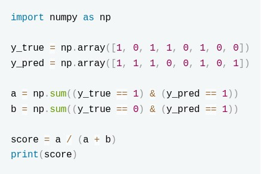
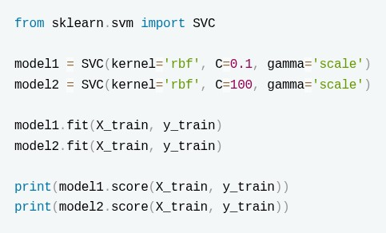
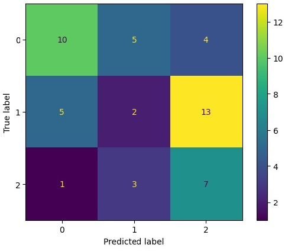
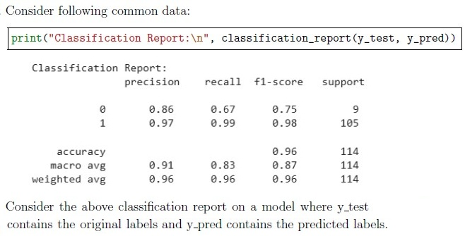
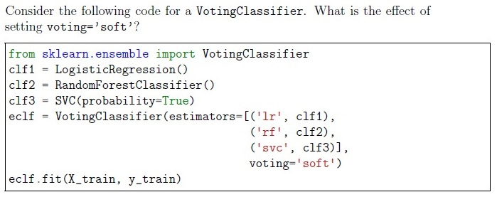
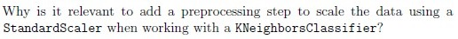
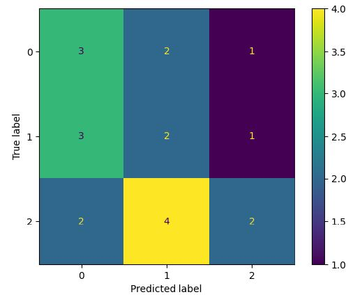
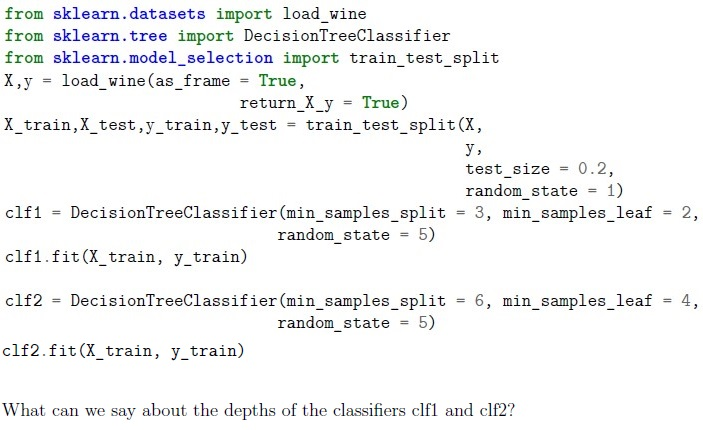
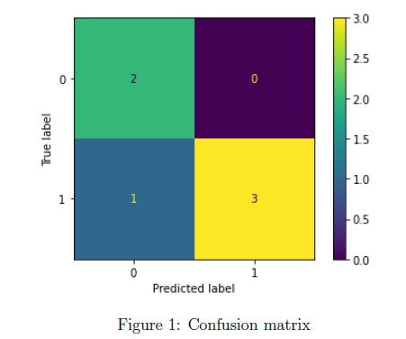

Home / MLP / Week 6 / Real questions
MLP week 6 - real exam questions
60 questions pulled from past papers whose wording matches this week's topics, newest first, duplicates removed. Pick your answers, then press Check answers. Figures and answer keys are the originals.
Elapsed 00:00
What evaluation metric does code the compute?

- R2 Score
- Recall
- Accuracy
- Precision
- F1 Score
A hospital develops a machine learning model to identify patients who may have a rare but life-threatening disease. Only about 1% of patients actually have the disease. Every patient predicted as positive is referred for an inexpensive follow-up blood test. However, missing an actual patient with the disease could delay treatment and have severe consequences. Which evaluation metric should be given the highest priority while selecting the model?
- Accuracy
- Precision
- Recall
- F1-score
A binary classification model was evaluated on a test set with 500 samples. The model correctly identified 90 positive samples and 360 negative samples. Out of all the samples predicted as positive, 120 were predicted as positive. There were 100 actual positive samples in the dataset. Compute the F1-score of the model. (Round to 2 decimals)
Which of the following metrics have their lower bound as 0?
- Accuracy
- F1-Score
- R2-Score
- Mean_Squared_Error
- Precision
Consider the following assertion and reason. Select the correct option. Assertion (A): Increasing the number of estimators in AdaBoost can sometimes reduce the test accuracy, even though the training error continues to decrease. Reason (R): In AdaBoost, after each iteration, the weights of correctly classified training samples are increased so that future weak learners focus more on these correct samples. Choose the correct option:
- Both A and R are true, and R is the correct explanation of A.
- Both A and R are true, but R is not the correct explanation of A.
- A is true, but R is false.
- A is false, but R is true.
An email service develops a machine learning model to automatically identify phishing emails. Any email predicted as phishing is immediately moved to the user's spam folder without notification. A legitimate email incorrectly marked as phishing could cause users to miss important messages, while an actual phishing email that is not detected can still be reported manually by the user. The company wants to minimize the number of legitimate emails incorrectly classified as phishing. Which evaluation metric should be given the highest priority while selecting the model?
- Accuracy
- Precision
- Recall
- F1-score
Select the correct statements regarding the following code snippet:

- model2 is more likely to have a lower bias and higher variance compared to model1.
- Increasing the value of C allowed model2 to penalize misclassification errors more strongly.
- model1 must always perform better on the test set because it has lower training accuracy.
- The gamma parameter has no effect because the kernel is already set to 'rbf'.
In the following question, an Assertion (A) is followed by a Reason (R). Choose the correct option from the choices given below: Assertion (A): In classification problems, precision should always be maximized over recall Reason (R): Recall is independent of false negatives
- Both A and R are true, and R is the correct explanation of A
- Both A and R are true, but R is not the correct explanation of A
- A is true, but R is false
- A is false, but R is true
- Both A and R are false
Consider the following adaboost models:
 Which of the following statements are MOST accurate?
Which of the following statements are MOST accurate?
Which of the following statements are MOST accurate?- adb1 is less likely to overfit than adb2 because its base trees are shallower.
- Increasing n_estimators always improves test accuracy for AdaBoost.
- Learning rate affects the contribution of each base learner; a smaller learning rate always reduces training accuracy.
- adb2 with deeper trees will have lower bias but higher variance than adb1.
Consider the following lists containing the true values and the predicted values.
 Calculate the f1_score for class 1. (Answer up to 2 decimals)
Calculate the f1_score for class 1. (Answer up to 2 decimals)
Calculate the f1_score for class 1. (Answer up to 2 decimals)Consider the following code snippet for a multi-class classification problem with three classes: 0, 1, and 2. The ground-truth labels are stored in  , and the predicted labels are stored in
, and the predicted labels are stored in  .
.
 What is the precision score for class 1?
What is the precision score for class 1?
, and the predicted labels are stored in .
What is the precision score for class 1?Analyze the following code snippet:
 Which of the following statements are correct?
Which of the following statements are correct?
Which of the following statements are correct?- mlp2 has more trainable parameters than mlp1.
- Changing random_state may change predictions even with the same dataset.
- Using 'sgd' solver always gives higher accuracy than 'adam'.
- 'tanh' activation guarantees better performance than 'relu'.
Consider the given 2 different lasso regression models trained on the same dataset:
 Statements: 1. The coefficients of lasso2 are more likely to be smaller in magnitude than those of lasso1. 2. lasso1 may have fewer zero coefficients than lasso2. 3. The predictions of lasso1 on the training data will exactly match y. 4. Increasing alpha always increases model accuracy on unseen data. Which of the given statements are correct?
Statements: 1. The coefficients of lasso2 are more likely to be smaller in magnitude than those of lasso1. 2. lasso1 may have fewer zero coefficients than lasso2. 3. The predictions of lasso1 on the training data will exactly match y. 4. Increasing alpha always increases model accuracy on unseen data. Which of the given statements are correct?
Statements: 1. The coefficients of lasso2 are more likely to be smaller in magnitude than those of lasso1. 2. lasso1 may have fewer zero coefficients than lasso2. 3. The predictions of lasso1 on the training data will exactly match y. 4. Increasing alpha always increases model accuracy on unseen data. Which of the given statements are correct?- 2 and 3
- 1 and 2
- 3 and 4
- 1 and 4
Which of the following can be used to evaluate the outputs of the KNNClassifier?
- Negative Mean Absolute Error
- Silhoutte Score
- F1 Score
- R2 Score
- Inertia
What is the value of recall score computed in the following code? (Enter upto 2 decimals)

What does metric in the following code measure?

- Accuracy
- Precision
- Recall
- F1_Score
We use classification report to evaluate our classification model:
 Which of the following metrics are included in the classification report?
Which of the following metrics are included in the classification report?
Which of the following metrics are included in the classification report?- Accuracy
- Mean Squared Error
- F1 Score
- Cross Entropy Loss
- Recall
What does metric in the following code measure?

- Accuracy
- Precision
- Recall
- F1_Score
Which of the following can be used to evaluate the outputs of the K-Means algorithm?
- Negative Mean Absolute Error
- Silhoutte Score
- F1 Score
- R2 Score
- Inertia
A medical diagnosis model is used to detect a rare disease that occurs in 0.5% of the population. A model is trained on this data, which of the following evaluation metrics are suitable for measuring effectiveness of this model:
- accuracy
- precision
- recall
- F-1 score

- Increasing the number of hidden layers always improves regression accuracy.
- Using the ReLU activation function in hidden layers is a good choice for MLPregression.
- The output layer should use a softmax activation to predict continuous houseprices.
- MLPRegressor does not require feature scaling since neural networksautomatically normalize input data.
Use the confusion matrix given below. What is the recall score for the label (class) 1 ?

Use the confusion matrix given below. What is the recall score for the label (class) 1 ?Comprehension passage for this question
Based on the above data, answer the given subquestions.

Consider the following assertion & reason and select the correct option:
Assertion: This is a good model as we see a very high accuracy of 96% Reason: In the case of imbalanced datasets, accuracy might not be the best metric for evaluating a model
- Both the assertion and reason are correct, and the reason is a correctexplanation of the assertion
- Both the assertion and reason are correct, but the reason is not a correctexplanation of the assertion.
- The assertion is correct, but the reason is incorrect.
- The assertion is incorrect, but the reason is correct.
Comprehension passage for this question
Based on the above data, answer the given subquestions.

Consider the following and select the corrrect option:
Assertion: This is a good model as we see a very high accuracy of 97% Reason: In the case of imbalanced datasets, accuracy might not be the best metric for evaluating a model
- Both the assertion and reason are correct, and the reason is a correctexplanation of the assertion
- Both the assertion and reason are correct, but the reason is not a correctexplanation of the assertion.
- The assertion is correct, but the reason is incorrect.
- The assertion is incorrect, but the reason is correct.
Which of the following Evaluation metrics can be used in a regression problem?
- Mean Squared Error
- Accuracy
- F1-Score
- Mean Absolute Error
- credit score
- CGPA

- GaussianNB
- LogisticRegression
- SGDClassifier
- RandomForestClassifier
Which of the following is correct about cross-validation in machine learning?
- Cross-validation helps prevent overfitting.
- It is a technique to improve the model’s accuracy.
- K-Fold cross-validation is one of the most popular types of cross-validation.
- Cross-validation is not suitable for small datasets.
Which of the following are valid loss functions for SGDClassifier?
- Squared Loss
- Hinge Loss
- Log Loss
- Mean Absolute Error

- The predictions are based on the majority vote.
- The predictions are based on the average of probabilities predicted by eachclassifier.
- The predictions are based on the weighted sum of the predictions.
- The predictions are based on the classifier with the highest accuracy

- The final predictions are based on the majority vote.
- The final predictions are based on the average of probabilities predicted byeach classifier.
- The final predictions are based on the weighted sum of the predictions.
- The final predictions are based on the classifier with the highest accuracy.

- The mean accuracy across all cross-validation folds.
- The mean precision across all cross-validation folds.
- The mean recall across all cross-validation folds.
- The mean F1 score across all cross-validation folds.
Which of the following class(es) is/are used to instantiate a neural network in Sklearn.
- SGDClassifier()
- MLPClassifier()
- NNClassifier()
- MLPRegressor()

- The number of correctly classified samples.
- The accuracy of the classifier.
- The loss function value.
- The number of misclassified samples.
What type of classification problem is the Perceptron algorithm best suited for?
- Linearly separable binary classification problems.
- Non-linear classification problems.
- Regression problems.
- Unsupervised Learning Problems
What is the default loss value in SGDClassifier API and it gives which classifier?
- ‘log loss’, LogisticRegressor
- ‘log loss’, LogisticClassifier
- ‘hinge’, SVM
- ‘hinge’, Perceptron
Which of the following scikit-learn model supports incremental learning through partial_fit method ?
- SGDClassifier
- LinearRegression
- Perceptron
- SVC
Which of the following techniques are used in decision trees to make decisions or to measure the quality of a split while training the model?
- Entropy
- RoC Curve
- Cross Entropy
- Gini Impurity
Consider a binary classification dataset with labeled as 98% negative samples and 2% positive samples. A model is trained on this data, which of the following evaluation metrics are suitable for measuring effectiveness of this model:
- accuracy
- Mean Absolute Error
- smote
- F-1 score
Which of the following option(s) are correct for the precision-recall curve
- A high area under the curve represents both high recall and high precision.
- The precision-recall curve shows the trade-off between precision and recall fordifferent threshold values.
- The precision-recall curve used to evaluate unsupervised algorithm forimbalanced clustered data.
- None of these
After training a multi-class classifier, you obtain the following confusion matrix. What will be the weighted average of the recall score for each class?
 After training a multi-class classifier, you obtain the following confusion matrix. What will be the weighted average of the recall score for each class?
After training a multi-class classifier, you obtain the following confusion matrix. What will be the weighted average of the recall score for each class?
After training a multi-class classifier, you obtain the following confusion matrix. What will be the weighted average of the recall score for each class? 
- Accuracy, Accuracy
- R2 score, R2 score
- Accuracy, R2 score
- R2 score, Accuracy
- F1 score, Precision
- Precision, Recall
- MAE, MSE
- The code will result in an error.
Which of the following variations of gradient descent can be implemented with SGDClassifier?
- stochastic gradient descent
- mini gradient descent
- full batch gradient descent
- None of these

- Speeds up the process of finding neighbors on unscaled data.
- k-nearest neighbors relies on computing distances. Normalizing featuresensures that each feature contributes approximately equally to the distance computation.
- Scaling the data significantly improves the accuracy of k-nearest neighbormodels.
- It doesn’t matter. K-nearest neighbors works equally well with or withoutnormalizing the dataset.
Which of the following is/are true about DummyClassifier?
- DummyClassifier makes predictions that ignore the input features.
- DummyClassifier serves as a simple baseline to compare against other morecomplex classifiers.
- The predictions of DummyClassifier typically depend on values observed in they parameter passed to fit().
- The predictions of DummyClassifier typically depend on values observed in theX parameter passed to fit().
- All of these.
You’re working on a binary classification problem where the dataset is relatively small, and you suspect that a linear decision boundary will work well due to distinct class separation. Additionally, you want to perform logistic regression with L1 regularization for improved feature selection. Which solver is most appropriate for this scenario?
- Newton-CG
- SGD
- LBFGS
- Liblinear
You’re working on a binary classification task using the ‘MLPClassifier’ to predict whether a customer will make a purchase based on their browsing behavior.You’re concerned about overfitting due to the complexity of the model. You decide to increase the ‘alpha’ parameter to control overfitting. The following code snippet shows the application of ‘MLPClassifier’:
 You’re working on a binary classification task using the ‘MLPClassifier’ to predict whether a customer will make a purchase based on their browsing behavior.You’re concerned about overfitting due to the complexity of the model. You decide to increase the ‘alpha’ parameter to control overfitting. The following code snippet shows the application of ‘MLPClassifier’:
You’re working on a binary classification task using the ‘MLPClassifier’ to predict whether a customer will make a purchase based on their browsing behavior.You’re concerned about overfitting due to the complexity of the model. You decide to increase the ‘alpha’ parameter to control overfitting. The following code snippet shows the application of ‘MLPClassifier’:
You’re working on a binary classification task using the ‘MLPClassifier’ to predict whether a customer will make a purchase based on their browsing behavior.You’re concerned about overfitting due to the complexity of the model. You decide to increase the ‘alpha’ parameter to control overfitting. The following code snippet shows the application of ‘MLPClassifier’: - Increasing the model’s complexity to fit the training data more closely.
- Adding a stronger regularization term to the loss function, discouragingcomplex models.
- Making the model more sensitive to outliers and noise in the data.
- Adjusting the learning rate to control convergence speed.
Using the confusion matrix given below. What is the precision score for the label (class) 1 ?

Using the confusion matrix given below. What is the precision score for the label (class) 1 ?Consider the following statements about SGDClassifier: 1. It can be used to train a model on large dataset that doesn’t fit in main memory 2. It can emulate a KNN model 3. It can emulate a decision tree model 4. It can emulate a perceptron Choose the correction option(s)
- 1 and 4
- 1 and 2
- 2 and 3
- 3 and 4
Consider two classifiers as shown in the following block of code:

Consider two classifiers as shown in the following block of code:- depth(clf1) ≥ depth(clf2)
- depth(clf1) ≤ depth(clf2)
- depth(clf1) = depth(clf2)
- Insufficient Information
Which of the following statements are incorrect about the AUC?
- The ROC curve plots sensitivity (recall) on the x-axis against specificity on the y-axis
- A completely effective classifier is a diagonal line, and it will have an AUC of0.5.
- The larger the value of AUC, the less effective the classifier.
- An AUC of 1 indicates a perfect classifier, which means it gets all the 1scorrectly classified, and doesn’t misclassify any 0s as 1s.
- None of these
Which of the following options represents all the correct precision, Recall, and accuracy values for the confusion matrix shown in Figure 1? [Note: All 3 values should be correct in the same option]

Which of the following options represents all the correct precision, Recall, and accuracy values for the confusion matrix shown in Figure 1? [Note: All 3 values should be correct in the same option]- Precision: 0.833 , Recall: 0.875, Accuracy: 0.833
- Precision: 0.875, Recall: 0.833, Accuracy: 0.833
- Precision: 0.9783, Recall: 0.9281, Accuracy: 0.909
- None of these
Mention whether the following statements are TRUE or FALSE . Statement 1 : ‘In order to extend ROC curve and ROC area to multi-label classification, it is necessary to binarize the output.‘ Statement 2: In SGDClassifier, setting warm_start=True does not retain the weight values of the model after max_iter and hence does not produce different results for each execution.‘
- Statement 1 is correct but statement 2 is incorrect.
- Statement 1 is incorrect but statement 2 is correct.
- Statement 1 and statement 2 both are incorrect.
- Statement 1 and statement 2 both are correct.
You have a binary classification problem to solve with following information: 1. All features are numircal. 2. The dataset has size of 80 GB. 3. The data has to be preprocessed. 4. After data preprocessing, train the model with gradient descent or its variations. Which of the following will perform the above task?
- Perform one hot encoding followed by training with LogisticRegression model(sklearn.linear_model).
- Perform standard scaling followed by asklearn.neighbors.KNeighborsClassifier model.
- Perform min-max scaling followed by a sklearn.tree.DecisionTreeClassifiermodel.
- Perform max-absolute scaling followed by asklearn.linear_model.SGDClassifier model.
Which of the following statements is/are incorrect about the AUC?
- AUC stands for Area Underneath the Curve.
- A completely effective classifier is a diagonal line, and it will have an AUC of0.5.
- The larger the value of AUC, the more effective the classifier.
- An AUC of 1 indicates a perfect classifier, which means it gets all the 1scorrectly classified, and doesn’t misclassify any 0s as 1s.
- None of these.
Putting loss=hinge in class sklearn.linear_model.SGDClassifier(loss=’hinge’) dictates which of the following loss functions in SGDClassifier?
- hinge but quadratically penalized
- logistic regression
- linear SVM
- None of these
Consider following statements: 1. Statement 1 : In order to extend ROC curve and ROC area to multi-label classification, it is necessary to binarize the output. 2. Statement 2: In SGDClassifier, setting warm_start=True retains the weight values of the model after max_iter and hence produce different results for each execution. Choose the correct option:
- Statement 1 is correct but statement 2 is incorrect.
- Statement 1 is incorrect but statement 2 is correct.
- Statement 1 and statement 2 both are incorrect.
- Statement 1 and statement 2 both are correct.
Which of the following options represent the recall value for the class 2 in the confusion matrix shown in Figure 1 if y_true = [0, 1, 2, 2, 2], y_pred = [0, 0, 2, 2, 1] ?
 Which of the following options represent the recall value for the class 2 in the confusion matrix shown in Figure 1 if y_true = [0, 1, 2, 2, 2], y_pred = [0, 0, 2, 2, 1] ?
Which of the following options represent the recall value for the class 2 in the confusion matrix shown in Figure 1 if y_true = [0, 1, 2, 2, 2], y_pred = [0, 0, 2, 2, 1] ?
Which of the following options represent the recall value for the class 2 in the confusion matrix shown in Figure 1 if y_true = [0, 1, 2, 2, 2], y_pred = [0, 0, 2, 2, 1] ? - 0.67
- 1.00
- 0.50
- 0.25
Which of the following is/are true about the following block of the code?
 Which of the following is/are true about the following block of the code?
Which of the following is/are true about the following block of the code?
Which of the following is/are true about the following block of the code? - Given dataset belongs to binary classification.
- Number of neurons in the 1st hidden layer is 8.
- Strength of the L1 regularization term is 0.0001
- The activation function for the output layer in the given code is the ′logistic′function.
Comprehension passage for this question

Calculate the precision value (up to 3 decimal places) from the confusion matrix.
Comprehension passage for this question
Calculate the recall value (up to 3 decimal places) from the confusion matrix.